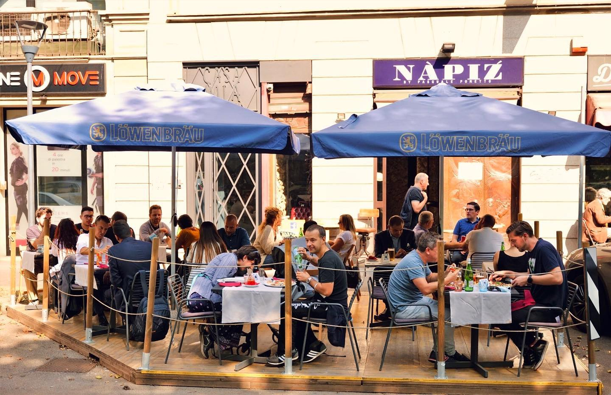

| Must-visit restaurants/cafes in Milan | ||||
| Name | Restaurants | Cafes | ||
| Napiz` Milano | Trattoria Milanese | Caffè Vergnano 1882 | Caffè Pascucci | |
| Photo |  | |||
| Pricing | Antipasti (appetizers): Prices range from €10 to €18.
Primi Piatti (first courses): Pasta dishes are typically priced between €12 and €20. Secondi Piatti (main courses): Main courses can range from €20 to €35. Dolci (desserts): Desserts are usually priced around €8 to €12. Beverages: House wine by the glass could be priced around €5 to €9, while a bottle of wine might range from €25 to €60. Soft drinks or mineral water typically cost around €3 to €6. |
Antipasti (appetizers): Prices range from €8 to €15.
Primi Piatti (first courses): Pasta dishes are typically priced between €12 and €18. Secondi Piatti (main courses): Main courses can range from €18 to €30. For example, a tender grilled beef steak could be priced at €25, while a roasted sea bass might cost €30. Dolci (desserts): Desserts are usually priced around €6 to €10. Beverages: House wine by the glass could be priced around €4 to €7, while a bottle of wine might range from €20 to €50. Soft drinks or mineral water typically cost around €3 to €5. |
Espresso: €1.50
Cappuccino: €2.50 Latte macchiato: €2.80 Americano: €2.00 Croissant: €1.50 Slice of cake: €3.50 Panini (sandwich): €6.00 Salads: €8.50 Gelato (single scoop): €2.50 Freshly squeezed orange juice: €3.50 |
Espresso: €1.50
Cappuccino: €2.50 Latte macchiato: €2.80 Croissant: €1.50 Slice of cake: €3.50 Cannoli: €3.00 Panini (sandwich): €6.00 Salads: €8.50 Gelato (single scoop): €2.50 Aperol Spritz: €8.00 |